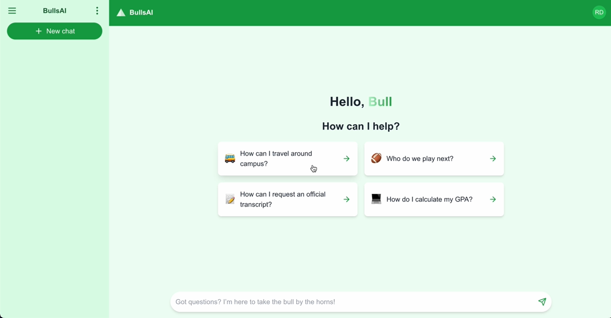

Data • Intelligence • Impact
Sai Sudheer
Vishnumolakala
I build as a Data Scientist
Turning complex data into reliable AI products—from predictive models and monitoring pipelines to LLM-powered analytics assistants.
Data • Intelligence • Impact
I build as a Data Scientist
Turning complex data into reliable AI products—from predictive models and monitoring pipelines to LLM-powered analytics assistants.

About
Data Scientist and AI Engineer with 4+ years of experience building predictive models, GenAI applications, RAG systems, and production analytics workflows across manufacturing, financial services, and research environments.
Experienced in developing LLM-powered analytics assistants, deterministic SQL routing, model monitoring pipelines, anomaly detection systems, and machine learning models that drive measurable business impact.
Proven results include $5.2M in fraud savings, 10% churn reduction, 25% sales lift, and 80% reduction in manual processing time.
Selected projects

GenAI decision-support assistant for ProcessMiner using deterministic SQL routing and LLM summarization to answer live manufacturing analytics questions.

Fine-tuned FLAN-T5 with PPO and parameter-efficient techniques to generate less-toxic summaries while preserving relevance.

Flask and PostgreSQL application for used-car pricing and recommendations using machine learning models and web-scraped market data.

Token-level anomaly detection using Autoencoders, achieving 0.94 AUC-ROC with privacy-preserving distributed learning.
Experience
Technical toolkit
Education

University of South Florida · Tampa, FL
Rajiv Gandhi University of Knowledge Technologies · Nuzvid, India